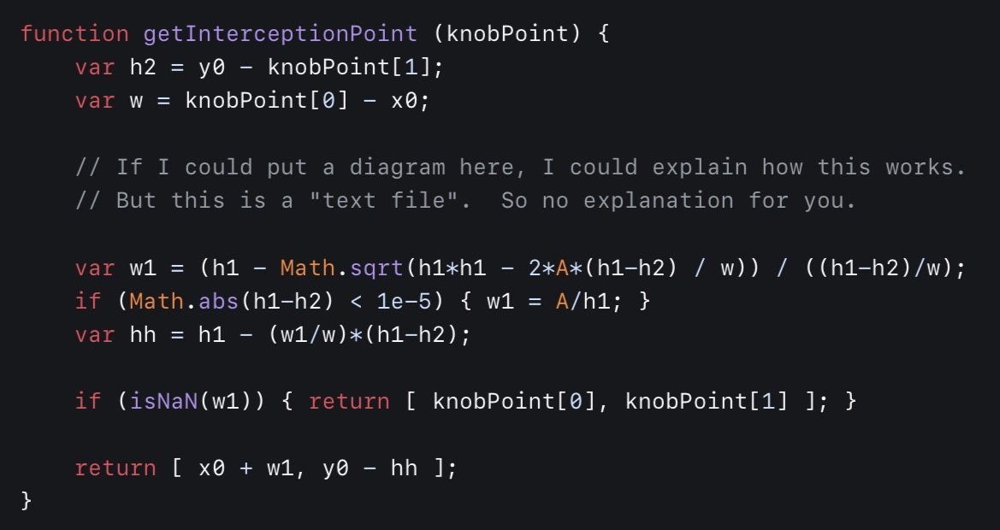

Global Notes
I have lots of ideas (as all INTPs seemingly do), but not enough time to write about them formally. In that case, this will serve as a structured in-the-moment brain dump for various things that are half-baking in my hollow cranium.
Clean Code == Good UI Design (2/N)
A colleague asked me to share my thoughts on this Internet of Bugs video.
The following was my response.
There is a lot of valid information in here, especially around the fact of not trying to hide all the information for why a particular decision was made.
For me, I still treat the idea of “clean code” as a UI design problem, in which the code and editor are the UI for editing the system. In effect, that means that the editor matters just as much as the code, because the editor can choose which parts to show and hide. So in practice, a lot of our techniques for organizing code have to be based around how the editor shows and hides code.
However, the problem is that our modern editors are quite terrible when it comes to larger systems (even with agentic AI). Larger systems (including our last project) often contain line counts at least in the 10s of thousands, but your editor can only show ~50 lines of code on a singular screen at any given point in time. In essence, modern editors have pinpointed their focus on writing text rather than creating systems.
This is why people hate the small function style presented in the Clean Code book. It’s solely because widespread editors make reading and understanding many small functions incredibly difficult due to the context you have to keep in your head that your editor doesn’t visualize.
For example, take this function.
async function generateReportFor(user) {
const isValid = validateUser(user)
if (!isValid) throw new Error("Invalid user")
const transactions = await transactionsFor(user)
const defects = await defectsIn(transactions, user)
const totalParts = await totalPartsFor(transactions, user)
return new Report(transactions, defects, totalParts)
}
Many would say this is poorly written because they would have to jump
from validateUser to transactionsFor to
defectsIn to totalPartsFor in their editor.
Yet reading just this high level function shows you the outline of how
a report is generated better than if all of the step functions were
inlined.
The problem here is that the individual code from the step functions is also very important, yet modern editors will not show it alongside the high-level function. Due to this, it’s often considered better code to just inline the step functions and create 1 very large function instead where all the details can be seen on a single screen. This latter part has many of its own problems (eg. creating a tightly coupled mess) that often arise as time progresses.
In other words, in many cases we’re really working around poor UI design decisions taken by modern code editors, and pretending like the code is the problem. The attached images below show other aspects of this problem in more detail.


— 12/1/25
Notes on Library Design
This probably deserves a longer piece at some point, but it’s worth touching up on it here briefly.
IMO, a good (mature) library has 2 strong design traits:
- An easy to use high-level API that achieves a task with minimal effort.
- A extensive low-level API that offers so much control such that the higher-level API can be completely re-written from the ground up externally if need be.
Of these traits, the second is definitely the more important aspect for real-world/long-term use, and is my first task when creating a new library. The first point largely exists as a necessary consequence to gain adoption, or to provide an answer to the common cases. IMO, it’s much more of a nice to have, and can come later down the line in development.
In Swift Operation, I made it a priority to give you the tools to reconstruct the higher level API if necessary. That is, if you don’t like a built-in API (eg. The retry API), you should be able to implement your own version of it that’s tailored to your needs.
SQLiteData also did a good job at providing both higher and lower
level control. On one hand, it exposes the
@Fetch property wrapper which @FetchAll and
@FetchOne build on top of. Additionally, it provides
low-level tools that integrate StructuredQueries with GRDB, so you’re
not tied to the property wrappers.
GRDB does this well too. It offers convenience APIs around transactions that work in 99% of scenarios, and the remaining 1% of cases allow you to reconstruct the way transactions work if needed. You can also write raw SQL alongside using its more convenient record request interface. StructuredQueries also does this latter part well.
Now for some counterexamples.
Tanstack Query did a good job at the higher level API, but its lower level could use some reconstructing. For instance, I can’t replace the built-in retry mechanism easily, or add composable behavior to queries or mutations.
Cactus did a good job providing a lower-level C FFI, but the official client libraries leave quite a lot to be desired. They seem to want to hide the complexities of model downloading, but also surface the low-level details of the FFI alongside those higher level details. At the same time, they had the library handle concurrency concerns for you, which may not align with your application’s desired workflow.
In Swift Cactus, I provide a higher level API for model downloading,
but I also allow you to construct a
CactusLanguageModel directly from a URL. Additionally, I
made the language model run synchronously which gives the caller more
control over which thread it runs on. This takes more work on the
caller’s end to put the model behind an actor, but the synchronous
nature also lets you put a mutex around an individual model instance
if you want to keep thread-safe synchronous access. This later
approach is very useful for things like generating vector embeddings
inside a synchronous database function.
A higher level agentic framework is currently in the works for Swift Cactus as I’m writing this. Here, you have less control over concurrency (mainly due to tool calling), but I think the resulting API should feel a lot easier to use once it’s completed. Despite all of this, the higher level agentic framework is built entirely on top of the existing lower level tools that you can use today, and you should be able to reconstruct parts of the agentic framework as you see fit.
— 12/1/25
iiSU
I would link the ~20 minute presentation here, but unfortunately due to drama its been taken down, so you’ll get the above image instead.
This was a project shared to me by a colleague which I found interesting because one of my favority hobbies in 5th grade was creating Super Mario World ROM hacks with Lunar Magic. Also, emulation was the reason that I was also able to enjoy many of the earlier Fire Emblem titles, and most notably Genealogy of the Holy War.
The main concerns I’ve read, myself included, seems to be the scope of the project. The former lead has an animation background, and clearly has an eye for aesthetics. Yet, he just announced including a social network, eshop, and much more (alongside the launcher) like it was no big deal. Since the presentation no longer exists, you can read this instead.
My most recent startup experience can be classified like the above with a somewhat similarly sized team as iiSU. In my case, we had a social fitness network in mind that was focused on physical events, an entire dynamic reflection journaling feature, and an entire literature narrative as an aesthetics layer (we even had drafts of chapters for this!). We got through rolling out the social network part, and a bit of the dynamic journaling part before really deciding that users actually wanted more of the later. Now we’re in the process of pivoting (new website for this will be up soon).
Regardless, it was worth it. I wouldn’t have taken on that project if it didn’t have a 90% chance of failure, and there were certainly lessons to be learned there from a business standpoint. Yet, the crucial thing is that if in theory the idea was executed properly, and received in the way we had hoped, then it could have made a significant impact on the way people perceived their health.
My philosophy since graduating has subsequently been to take on ambitious projects that have a 90% chance of failing, but if in the 10% chance that it succeeds, then it makes a huge difference. Swift Operation was one of those successes in my opinion, and I’ve used it extensively on every project I’ve undertaken since its release. Swift Cactus could be another in the future, it’s already gotten recognition from the cactus core team, and I’m currently working on making a higher-level framework that makes building with local models a lot more powerful than what you get with FoundationModels.
Of course, those 2 projects consist of just me in my free time, so the scope isn’t nearly as big as my professional work. However, I also have other projects of my own in the background that I believe are even more ambitious than the 2 above. I hope to have updates on those soon.
AFAIK, the primary dev of iiSU’s team seems like they know their stuff, and I think it would be theoretically possible for something to come out of this even if it isn’t everything that was envisioned in the now deleted presentation. At the very least, it seems like an interesting project to follow even if I’m not in the target audience.
— 11/28/25
Computing Culture Origins
![Computing is pop culture. [...] Pop culture holds a disdain for history. Pop culture is all about identity and feeling like you're participating. It has nothing to do with cooperation, the past or the future—it's living in the present. I think the same is true of most people who write code for money. They have no idea where [their culture came from]. -Alan Kay, in interview with Dr Dobb's Journal (2012)](./global-notes/assets/computing-culture-origins-1.jpeg) Show a random CS major or Software Engineer pictures of Netwon,
Einstein, and Feynman. Chances are they’ll recognize one of their
pictures, typically Einstein. These people are world reknowned
scientists.
Show a random CS major or Software Engineer pictures of Netwon,
Einstein, and Feynman. Chances are they’ll recognize one of their
pictures, typically Einstein. These people are world reknowned
scientists.
Do the same with pictures of Dennis Ritchie, Bjarne Stroustrup, Ken Thompson, Brain Kernighan, and Linus Torvalds. Chances are they’ll recognize at least one of if not multiple of them if they’re interested in their craft. These people are largely responsible for the programming languages and operating systems they use.
Now do the same with Alan Kay, Doug Engelbart, Ivan Sutherland, and Ted Nelson. In the vast majority of cases that I’ve tried this, no one has been able to recognize even one of their pictures as well as their names. These people are largely responsible for the fact that they even have a laptop, desktop, or phone with the ability to interact in an online ecosystem today.
Rather unfortunately, the ideas of the last group that have largely been ignored, or butchered when implemented in today’s commercial products.
If you take modern “OOP” languages like Java, C++, Kotlin, Swift, etc. to be object-oriented, I recommend you really try to understand what Kay was getting at with the term “object-oriented” (also look at Sketchpad by Ivan Sutherland).
If you take the web to be a ubiquitous online ecosystem rich with discussion, convenience, and collaboration, then I recommend that you really look into the work of Doug Engelbart (especially this), Ted Nelson, and many others.
One modern sucessor to the work of these pioneers is Bret Victor and Dynamicland (which is very anti-Vision Pro). In fact, you can find archives of the work of many of the above pioneers on his website.
— 11/24/25
“Surveillance Driven Development”
![As a thought experiment, try replacing the word data with surveillance, and observe if common phrases still sound so good [93]. How about this: 'In our surveillance-driven organization we collect real-time surveillance streams and store them in our surveillance warehouse. Our surveillance scientists use advanced analytics and surveillance processing in order to derive new insights.'](./global-notes/assets/surveillance-driven-development-1.jpeg) This is one of the problems of the web and mass centralization. By its
very design, all remote data is centralized, and this design often
encourages such surveillance like behavior.
This is one of the problems of the web and mass centralization. By its
very design, all remote data is centralized, and this design often
encourages such surveillance like behavior.
If anything, reading Designing Data Intensive Applications (source of the quote) has taught me that large centralized distributed systems that make high-stakes decisions for people are terrible ideas. From the technical standpoint, often the best state a large system can be in is “eventually consistent”. That is, a state in which not all necessary information (much of which is completely invisible to the end-user) is guaranteed to be present to make a proper decision at any given moment.
This isn’t even mentioning the fact that as system designers we are often making systemic decisions in contexts that don’t reflect the actual context in which the system operates in.
My take on this is that data and decision making power are best kept by the individual, and not the organization. Rather, it should be the job of the organization to enhance the decision making power of the individual (eg. Public education teaches us to read, and reading helps us make better decisions).
This is particularly why I’m interested in heavy client-side based software solutions in today’s landscape (eg. Native mobile apps, local LLMs) rather than remote/web based solutions. I try to limit the server side component as much as possible on small/solo projects. Often I find that it isn’t necessary to create a dedicated backend in the first place for many useful products outside of proxying requests to third parties.
Of course, long term I’m much more interested in tomorrow’s landscape, which ideally will embrace the idea of individual creative freedom far more than its predecessors. That is, I would rather we treat the masses as capable creators rather than “the audience”. The web and subsequent AI-driven culture fails horrifically at this.
— 11/22/25
Why not Social Media?
I’m often asked why I’m not hyper active on platforms like X, Threads, or Bluesky, and why I’m opting for this global notes style thing instead.
The simple answer to this is that all the mainstream social media platforms are not designed for real creative expression. They’ve adopted the “easy to use, perpetual beginner” mindset, and have amplified it across billions of users. This is quite disastrous in my opinion.
On this website, I can use whatever HTML, CSS, and JavaScript I want to express my work. I can even embed entire interactable programs directly into my writing. (I wish to do this more in the future). On social media, you’re essentially limited to plain text, video, and photos, which is very rigid in comparison, and this is not even taking the “algorithm” into account.
I am very fortunate to have had the natural interest in technology and software, as well as the natural ability to understand the complex abstact concepts that have enabled me to unlock this kind of expression in my work. This is not most of the world, and it’s quite saddening to see that they get much more limited forms of expression.
Text on a black background, simple photos, and static videos delivered to a one-size-fits-all audience and displayed in a 6-inch rectangle are not powerful enough mediums to communicate complex ideas that determine the direction of society. Much of these ideas rely on trends in large complex datasets, or disastrous things we cannot see (eg. The climate problem). From a UI design standpoint, static content isn’t enough to convey everything that’s needed with this complexity.
Additionally, centralized large-scale algorithms that make the decisions on what media to surface are also not ideal when those decisions are made based on impulsive trends. Nearly all influential media in the world (eg. The US Constitution, “Common Sense”) did not use extensive emotional/moral baiting rhetoric to convey their ideas in the way we see on social media today. Thomas Paine didn’t need to participate in the “attention economy” in writing “Common Sense”, which was one of the influential documents in the wake of the American Revolution.
It’s true that my “visibility” on this site is far lower than if I were more active on social media, but my intention is only merely to reach an audience with the capable creative abilities to seek something greater. If you’re reading this of your own accord, there’s a high chance that you have such ability, and you’re exactly the type of person that I’m trying to reach.
— 11/21/25
CleanMyMac + Xcode
CleanMyMac is software meant for cleaning up junk files on your mac when your disk inevitably fills up with Xcode’s shenanigans. Incredibly, CleanMyMac will refuse to launch when your disk space is actually full!
Now the real question is why does Xcode need to take up so much space? Even more importantly, why does Xcode go to such lengths to hide the actual contents of the things it stores? This much invisibility is not very nice…
Caches = storing information that allows us to access information…
The interesting thing is that the idea of disk-based storage forces us to think in very abstract terms since you can’t visually see what’s being stored, which most human minds massively fail at. MacOS also likes to put a “user-friendly facade” around the whole thing, because a lot of that storage is taken by various caches and internal application data. This facade comes with the tradeoff that the larger part of society is completely oblivious as to what their machines are actually doing.
— 11/20/25
Clean Code == Good UI Design (1/N)
I tend to think of writing clean code as good UI design (this is
something I want to write about extensively at some point).
Unfortunately, modern text editors and programming languages don’t see
things this way (this is also something I want to write about
extensively at some point), and I often find myself enjoying fun
illustrations like such.
Source
— 11/19/25
Initial TCA 2.0 Thoughts
This looks interesting, as someone who’s casually used TCA since pre-Reducer protocol days, I can give some thoughts here.
I like how the ping-ponging of actions has been taken away, this was
extremely annoying, and I generally gated all of these ping-ponging
actions inside an Effect enum. Eg.
// This
@Reducer
struct Feature {
// ...
enum Action {
case buttonTapped
case effect(Effect)
enum Effect {
case dataLoaded(Result<SomeData, any Error>)
}
}
var body: some ReducerOf<Self> {
Reduce { state, action in
switch action {
case .buttonTapped:
return .run { send in
let result = await Result { try await someWork() }
await send(.effect(.dataLoaded(result))
}
case .effect(.dataLoaded(let result)):
// ...
}
}
}
}
// Now Becomes This
@Reducer
struct Feature {
// ...
enum Action {
case buttonTapped
}
var body: some ReducerOf<Self> {
Reduce { state, action in
switch action {
case .buttonTapped:
return .run { store in
let result = await Result { try await someWork() }
try store.modify { /* Just set state in here */ }
}
}
}
}
}
With the old way of doing things, it was quite easy to lose focus of the overall control flow.
In terms of Store vs StoreActor, I would
rather that they also have a non-Sendable store type, and simply wrap
the actor isolation on top. This is what I did with
CactusLanguageModel in
Swift Cactus,
and the flexibility is quite nice. I can choose to call the language
model synchronously in a thread-safe manner using Mutex,
or asynchronously by wrapping it in an actor. I think it should be the
same for the store as well.
onMount and onDismount are also healthy
additions, especially since they’re not tied to any one view system
(which I presume is necessary for the cross platform support they want
to achieve). Long ago, in one of my first apps, I remeber defining the
notion of an AppearableAction which essentially tried to
automate the whole onAppear and
onDisappear dance. Suffice to say,
onMount and onDismount are better than those
tools.
The new onChange behavior is also very welcome, and it’s
definitely more intuitive.
I also presume the removal of BindingReducer is a natural
consequence of wanting to make things cross platform.
I like the overall direction of turning features into descriptions rather than imperative messes. Swift itself is still quite imperative though which is admittedly annoying.
— 11/19/25
Github Outage + Dependence
Trying to push code to a Swift library I’m working on, but it seems github is facing issues according to their status page. It looks like I “don’t have access” to pulling or pushing changes to remote which sucks…
Thankfully, this is not a mission critical project, and I don’t have to urgently deploy a fix to some issue anywhere else. However, it makes one think about how Github itself is a single point of failure for most serious software businesses.
I consider Github to be a safety critical system in the same vein as software that controls vehicles or medical devices. A crash can prevent an organization’s ability to urgently deploy a fix to users, which can be fatal if the organization is also working on safety critical systems.
From a systems design standpoint, I would be looking to more than just
Github as a code repository if I were working on safety critical
systems. A simple implementation of this could be using something
GitLab in conjunction, but could also mean building our own tools to
solve this problem. Git from a collaboration/communication UX
standpoint is quite poor IMO, it’s main value is the diffing engine.


— 11/18/25 (12:52 PM)